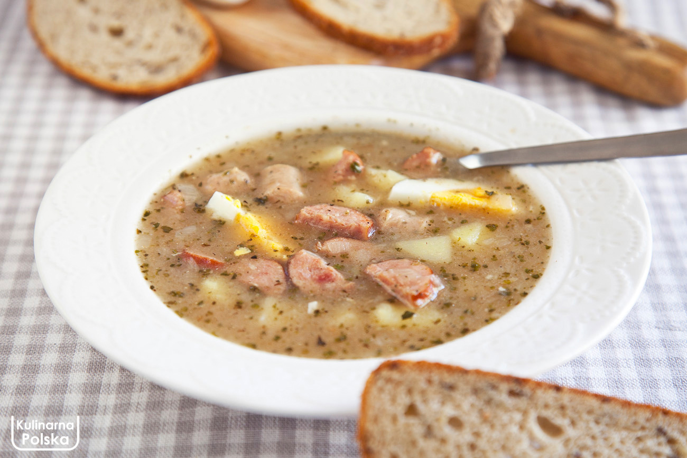

Return to main page
Sour Rye Soup

Description
Also known as: 'Polish rye soup', 'Sour bread soup' and a 'Hangover soup'.
Just as the Far East ferments tofu, here in Poland we ferment... rye flour. From that sour base, a magnificent soup is brewed.
Żurek tangy, meaty and full of character. A comforting dish - not only during Easter.
Ingredients
- meat stock
- unsliced bacon
- white onion
- parsley roots
- white kiełbasa sausage
- Sour Rye Flour Starter (pol. ZAKWAS)
- whipping cream
- dried marjoram
- salt and pepper
Steps
- Heat the stock in a cooking pot on medium heat.
- Fry the bacon and onion.
- Move the contents of the frying pan into the pot with stock.
- Drop whole carrot and parsley root in the stock.
- Add white kiełbasa and cook for 30-40 minutes.
- Boil the eggs.
- Add the rye "zakwas" starter.
- Remove the pot from heat.
- Smacznego!